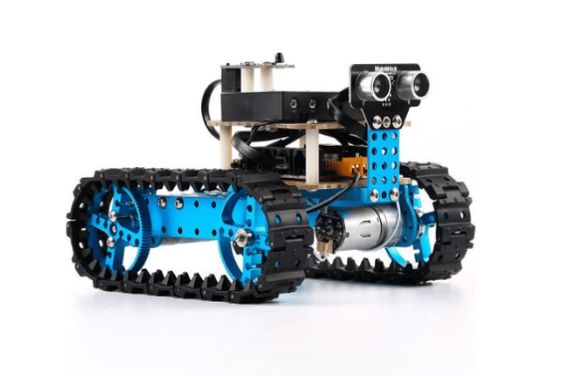
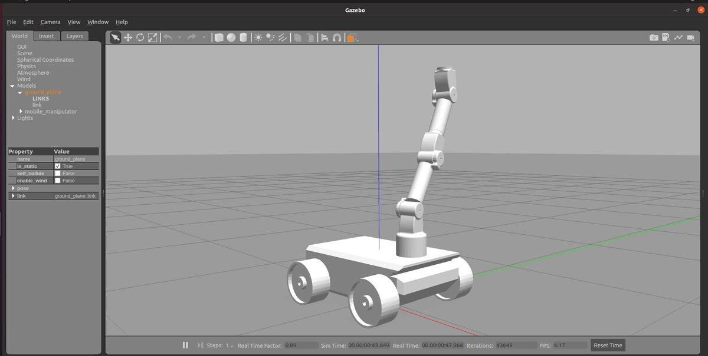

Projects During Erasmus Exchange
1.Java Robot Project:
Built a robot from scratch and used Java android Studio to make the robot detect objects and perform actions based on visual input.Skills Gained: Java programming, computer vision, hardware integration. Outcome: Successfully created a functional robot that demonstrated object detection capabilities and responsive actions3

2.Advance software technologies(master course)
Course Description: This course covered critical methodologies in modern software development, with a focus on robotics, distributed systems, behavior trees, and simulators. Key Learnings:
Methodologies: Learned essential software development methodologies.
Focus Areas: Worked extensively on robots, distributed systems, and behavior trees.
Tools learned: Gained hands-on experience with ROS, Gazebo, and Scikit, among other tools.